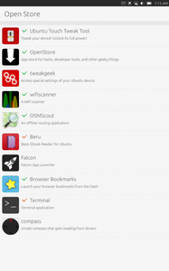
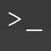

OpenStore
Dieser Artikel bezieht sich auf Ubuntu Touch, die Variante von Ubuntu für mobile Geräte mit Touchscreen.
Getestet wurde der Artikel für folgende Version(en):
Ubuntu Touch 15.04 Vivid Vervet
Zum Verständnis dieses Artikels sind folgende Seiten hilfreich:
OpenStore  ist eine Plattform, welche Programme und Snap-Pakete anbietet, die nicht im offiziellen Ubuntu Store veröffentlicht werden können.
ist eine Plattform, welche Programme und Snap-Pakete anbietet, die nicht im offiziellen Ubuntu Store veröffentlicht werden können.
|  |
| Open Store |
Anwendungen aus dem Ubuntu Store laufen in einer Sandbox. Indem innerhalb dieser bestimmte Zugriffsrechte beschränkt werden, wird dafür gesorgt, dass der Benutzer vor bösartigem Code oder falsch programmierten Anwendungen geschützt wird. Beispielsweise können Anwendungen nur auf bestimmte Verzeichnisse zugreifen. Anwendungen aus dem OpenStore hebeln das Sicherheitskonzept von Ubuntu Touch aus und können dem Anwender neue Möglichkeiten im Umgang mit dem Gerät bieten.
Trotz der Möglichkeiten des OpenStores wird die Verwendung des offiziellen Ubuntu Store dringend empfohlen.
Installation¶
Um den Store nutzen zu können, wird zuerst das aktuelle Paket von der Entwicklerseite  heruntergeladen und auf dem Telefon installiert [1]:
heruntergeladen und auf dem Telefon installiert [1]:
pkcon install-local --allow-untrusted openstore.openstore-team_VERSION_armhf.click
Der Name, insbesondere die VERSION, muss passend zum Download eingesetzt werden.
Hinweis!
Fremdpakete können das System gefährden.
Achtung!
Für jegliche Eingriff in Ubuntu Touch ist der Besitzer selbst verantwortlich. Weder die Artikelautoren noch ubuntuusers.de haften, falls Probleme auftreten oder das benutzte Gerät im schlimmsten Fall nicht mehr gestartet werden kann. Es kann vorkommen, dass Ubuntu Touch durch einen sogenannten Flashvorgang neu aufgespielt werden muss.
Anwendungen¶
Eine Übersicht der Programme, welche im OpenStore unter anderem zur Verfügung stehen:
| Anwendungen | |||
| Logo | Programm | Beschreibung | Ubuntu Store |
| Beru | E-Book-Reader, um elektronisch gespeicherte Buchinhalte darzustellen (EPUB, CBZ und PDF). In dieser Version kann das Verzeichnis mit den Büchern frei definiert werden. | Beru | |
| Browser-Bookmarks | Lesezeichen aus der Dash öffnen. | Browser-Bookmarks | |
| compass | Kompass für Ubuntu Touch. | compass | |
| Dekko | E-Mail-Programm - Version mit Benachrichtigungen. | Dekko | |
| Falcon | Mit dem Falcon App Launcher  AppArmor nutzen. AppArmor nutzen. | Falcon | |
| OSMScout | Navigation mit Karten von OpenStreetMap. Die Karten können bei dieser Version auf der SD-Karte gespeichert werden. | OSMScout | |
| Owncloud-Sync | Synchronisation mit ownCloud. | Owncloud-Sync | |
| Rockwork | Pebble mit dem Smartphone ansprechen. | Rockwork | |
| ScummVM | Adventures mittels ScummVM spielen. | ScummVM | |
| Shadowsocks | Client für Shadowsocks. | Shadowsocks | |
|  | Terminal | Das Terminal auf dem Telefon verwenden. | Terminal |
| tweakgeek | Spezielle Einstellungen vornehmen (z.B. erzwungener Fenstermodus). | tweakgeek | |
| ubtd | Dateien via Bluetooth senden/empfangen. | ubtd | |
| Ubuntu Touch Tweak Tool | Geräteoptimierung vornehmen. | Ubuntu Touch Tweak Tool | |
 | wifiscanner | Einen freien WLAN-Kanal finden. | wifiscanner |
Hinweis:
Alle Programme können auch einzeln installiert werden.
Deinstallation¶
Die Anwendungen können, wie unter Ubuntu Store beschrieben, wieder vom Gerät entfernt werden.
 Übersichtsartikel
Übersichtsartikel- Erstellt mit Inyoka
-
 2004 – 2017 ubuntuusers.de • Einige Rechte vorbehalten
2004 – 2017 ubuntuusers.de • Einige Rechte vorbehalten
Lizenz • Kontakt • Datenschutz • Impressum • Serverstatus -
Serverhousing gespendet von